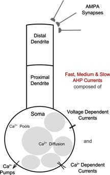

I enjoy constructing novel intelligent systems and solving difficult problems.
My domain application focuses have been in sustainability, weather, logistics, natural language understanding and quantifying uncertainty. I bring a diverse set of knowledge that includes transformer models, recurrent neural networks, linguistic theory, dynamical systems, graphical models, predictive models and mathematics of learning in the brain. My strengths are creativity, persistence and the ability to redesign and combine multiple ML methods to create more effective systems.
I received my PhD with Stephen Grossberg as my advisor at Boston University,
on modulation of reverberant memories in cortical circuits,
explaining mechanisms of attention, learning and adaptive resonance in the brain.
Following this, I worked as a Postdoctoral Research Scientist in Computational Neuroscience at BU
as part of the Neuromorphics Lab and in collaboration with the robotics startup Neurala.
As PI in 2013, I created a novel learning system that learns both whole patterns rapidly (1-shot learning)
and symbiotically richer orthogonal sub-patterns gradually. The work was patented for robotic vision.
I spend personal time on mathematics, game design, soccer and language studies.
This site highlights and describes my journeys on major themes in my life.
AI & Machine Learning
Fortuitous Beginnings
The founding event of artificial intelligence is widely considered to be the Dartmouth Workshop of 1956.
It was run by Minksy and McCarthy with a small group of notable researchers Shannon, Nash, and Oliver Selfridge.
A year later also at Dartmouth, Stephen Grossberg began his studies applying differential equations to neural networks.
Much later, I was born and grew up around Dartmouth College.
Later still, I had the fortune of discussing my own ideas about neural networks with Oliver Selfridge.
After several meetings, he kindly wrote me a recommendation for graduate school.
And I would do my graduate work with Steve Grossberg.
I did not notice the Dartmouth connection until even later.
In retrospect, I can not help but feel that my involvement in AI started with a bit of fortune.
Evolving Minds
Upon graduating from high school, I was hired as a software intern in Pascal.
That summer before college, I build a visual tool for building and editing networks of fuzzy logic relations and
a genetic algorithm that could optimize any variable by tuning others that directly and indirectly influenced it.
The work was funded by NIMA (National Imagery and Mapping Agency).
In a summer, I learned a new programming language and about evolutionary programming, optimization, fuzzy logic, user interfaces and much more.
Seeds were planted.
As I entered college, my interest in evolutionary methods persisted, but I also discovered neural networks.
Intrigued, I bought a newly published book Pulsed Neural Networks by Wolfgang Maass and Christopher Bishop.
Combining the ideas together, I started a project which I called "Evolving Minds".
I build a simulated evolutionary environment for spiking neural networks.
Virtual agents moved and sensed their surroundings, based on the pulsing of their individual neural networks.
They needed to eat sufficient food and avoid posion to survive,
and needed find a mate of the opposite gender to pass on their genetic information.
Specified as strings of 0-1 floating points, their genetics determined the network connectivity and hyperparameters.
The agents evolved learn sequential behaviors, reacted to stimuli and become adept at finding food and a mate,
albeit after months of balancing mcuh of the system, such environmental time constants.
All build with C++ and OpenGL, the project became my undergraduate thesis.
More details to come
Math & Games
"When you play a game, you find out what it is you should have been thinking about"
- John Conway
Mancala
The game of mancala had a significant impact on me as a child.
It is a quite simple game:
Count out stones around in a circle, and try to get the most in your pot at one end.
Of course, there are a few more rules - but these were a matter of convention.
What intrigued me was how a couple different rules led to very different games.
The strageies were different and the patterns of stone distributions that formed were different.
I wanted to play with a different set of rules almost every time.
Around the same time, I was also interested in patterns in numbers,
and my 2nd grade teacher had me present to the class my calculation tricks.
Unbeknownst to me then, these were seeds for a lifelong fascination with patterns, number theory and game design.
Game Design
Additionally, I have been a game developer. A short description of one project:
The Neu Shah
This is a long-term project for a semi-cooperative semi-competitive game in which participants struggle
for survival and spiritual transcendence through a semi-imaginary and semi-historical human evolution.
It unfolds with an emphasis on both educational and creative processes, and has the unusual features of a varying illumination of the board, novel piece movement and non-turn based group play.
The earliest version (1998) was a more typical development-based world domination game, much like Civilizations, titled Imperium.
2014 Numbers & Games Presentation
A quirky talk on my mathematical tendencies and projects outside of technology and science proper
Motivations
Human
The world is intricate and beautiful, and to me, humans the most fascinating among it.
The mind of the individual, how it grows, learns, sleeps, remembers and dreams, has fueled my studies.
And the behaviors of community, how we communicate
and how we can cooperate with each other to accomplish more, has compelled my work.
The desire to build a better world around us and sustain humanity has driven me further.
Hopeful for more adventures to come.
Neural Networks & the Mind
Neural Processing
I studied the dynamics of neural codes and learning in biologically plausible network models of spiking neurons
to understand how memory stability can overcome the interference in distributed representations and enable compressed hierarchical memories.
Are neural oscillations a means for the brain to resolve interference by regulating types of learning?
Is there an interdependence between the beneficial process of pattern matching and the evolved laminar circuitry of cortex?
What role does sleep play in the oscillatory regulation of this circuitry and interference management?
My graduate work has been on constructing dynamical systems from current neurophysiological findings,
I analyze their behavior computationally with MATLAB,
Simulink,
and KINNESS
to theorize about spiking neural architectures of cortex and contribute toward resolving these compelling questions.
Symbiotic Fast and Slow Learning
In my recent postdoctoral project, I conceived and implemented a novel learning design.
The approach combines principles of Adaptive Resonance Theory and sparsing coding to produce a system that
performs both whole-pattern fast learning and slower part-based learning for memory compression in shared network representations.
This work also examines how memory stability might overcome the risks caused by interference in distributed representations.
The method is in the process of submission for provisional patent by Neurala.
Acetylcholine and AHP Currents: Impact on Transfer Functions

My dissertion under Stephen Grossberg
and Max Versace
examines the function of the neurotransmitter acetylcholine (ACh) and after-hyperpolarization (AHP) currents in cortical networks.
Our spiking neuron model matches physiological properties of a breadth of AHP currents
observed in mammalian neocortices and characterizes their dependence on behavioral ACh concentration changes
and their underlying calcium mechanism (sketch of model neuron at right).
The simulations demonstrate how their collective state controls the shape of neuron transfer functions
and explain why these state changes are pivotal for stimuli processing and memory formation.
Palma, J., Versace, M., and Grossberg, S. (2011).
After-hyperpolarization Currents and Acetylcholine Control Sigmoid Transfer Functions in a Spiking Cortical Model.
Journal of Computational Neuroscience. DOI: 10.1007/s10827-011-0354-8.
Read the Article
Cholinergic Modulation of Short-term Memory in Thalamocortical Circuits
The second phase of this work addresses the impact of cholinergic signals in the context of thalamocortical circuitry as a vigilance signal.
Recurrent spiking networks with realistic cortical parameters exhibit persistent activity and oscillations.
The project shows that cholinergic innervation from the basal forebrain controls the duration and form of pattern maintenence in these cortical circuits.
Such modulation can regulate memory specificity during learning
by shifting the processing mode of target populations in a context-sensitive manner.
Palma, J., Grossberg, S., and Versace, M. (2012).
Persistence and storage of activity patterns in spiking recurrent cortical networks: modulation of sigmoid signals by after-hyperpolarization currents and acetylcholine.
Journal of Computational Neuroscience. DOI: 10.1007/s10827-011-0354-8.
Read the article
Modeling: Computation and Code
Neuromorphics Simulink Library, aka 'Palma Libs',
A Simulink Library for Spiking Neural Networks, Shunting Neural Networks, Learning Laws and Analysis
Sigmoid Signaling and Pattern Processing by Spiking Cortical Networks: Modulation by After-hyperpolarization Currents and Acetylcholine. (February 2012)
Palma, J., Gorshechnikov, A., Luzanov, Y. Versace, M. Symbiotic fast and slow learning in hierarchical cortical circuits. In prep.
Grossberg, S., Versace, M., Palma, J. A Shared Brain Design for Learning and Choice in
Cognitive and Motor Systems: Decision Making by Resonant Attention. In prep.
Palma, J., Grossberg, S., and Versace, M. (2012).
Persistence and storage of activity patterns in spiking recurrent cortical networks: modulation of sigmoid signals by after-hyperpolarization currents and acetylcholine.
Frontiers in Computational Neuroscience. DOI: 10.3389/fncom.2012.00042. View at Frontiers
Palma, J., Versace, M., and Grossberg, S. (2012).
After-hyperpolarization Currents and Acetylcholine Control Sigmoid Transfer Functions in a Spiking Cortical Model.
Journal of Computational Neuroscience. DOI: 10.1007/s10827-011-0354-8.
View at JCN
Palma, J., Versace, M., and Grossberg, S. (2011) After-hyperpolarization Currents and Calcium Dynamics Control Sigmoid Transfer Functions in Spiking Cortical Networks.
ICCNS 2011, Boston, MA, USA. (Talk) Conference Website
Palma, J., Versace, M., and Grossberg, S. (2009) After-hyperpolarization Currents Control Sigmoid Transfer Functions in Spiking Cortical Networks.
ICCNS 2009, Boston, MA, USA. (Poster)
Additional Work
Evolving Minds: Genetic Evolution of Pulsed Neural Network Agents in a Simulated Survival Environment (2003) Honors Thesis, University of Pennsylvania
Language & Interpretation
Unspoken Language
Details to come.
Connections
Affliations
(Current and Past)
Computational Neuroscience, Boston University compnet.bu.edu
 The Neu Shah
The Neu Shah